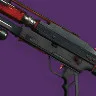

推荐者：
余是猫# 威胁等级电表倒转 推荐人：余是猫 描述：双动能输出武器配合神器特效疯狂产弹实现无限绿弹紫蛋 更新：2026.10.17 场景：宗师/终极 分支：棱镜 强度：强力 核心：威胁等级 ## 职业 职业：猎人#row:elements/class-abilities/分节/猎人 超能：黄金枪：神枪手#375052468 星相：飞升#2835214901、严冬帷幕#2934767477 碎片：保护琢面#2626922120、希望琢面#2626922122、黎明琢面#2626922126、使命琢面#124726498 手雷：抓钩#2470512752 近战：陷阱炸弹#1139822081 职业技能：赌徒闪身#426473317 ## 武器 异域武器：缩影#4207066264 传说武器：威胁等级#1523151869 | 全明星#1226351311、级联点#3751912585 传说武器：岁时之巅#3293207827 | 羸弱能量球#243981275、混沌重塑#3640170453 ## 护甲 异域护甲：相对主义#2809120022、至纯光能之灵#1476923953、曲腹蛛之灵#3751917994 套装：玻璃拱顶#set:741162535 2 件 × 埃希恩记忆#set:741162535 4 件 头盔：动能虹吸#1388734897、弹药搜寻者#4294967296、特殊武器弹药搜寻者#2595839237 护臂：专注打击#3685945823、伤害感应#377010989、近战洗礼#633101315 胸甲：震荡阻尼器#3719981603、虚空抗性#3410844187、谐振抗性#1293710444 腿部：复原#4087056174、支配#1750845415、动能武器激涌#14520248 职业物品：强力吸引#11126525、收割者#40751621、特殊终结技#4004774872 ## 神器 神器：加密数据盘 模组：动能合成#3834273540、苦痛之力#3834273539、精准平等#2903198432、护甲匠#2903198437、致盲震颤#2903198433、动能裂口#2742146822、电介质#2903198438 ## 六维 六维：生命 ~ ｜ 近战 70 ｜ 手雷 70 ｜ 超能 100 ｜ 职业 100 ｜ 武器 150+ ## 注解 二编这套更适合宗师终极的定位 生存非常高 副手随便换 看勇士换
职业
武器
神器模组
护甲
- 生命~
- 近战70
- 手雷70
- 超能100
- 职业100
- 武器150+
腿部
职业物品
注解
二编这套更适合宗师终极的定位 生存非常高 副手随便换 看勇士换